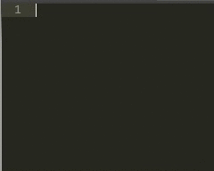
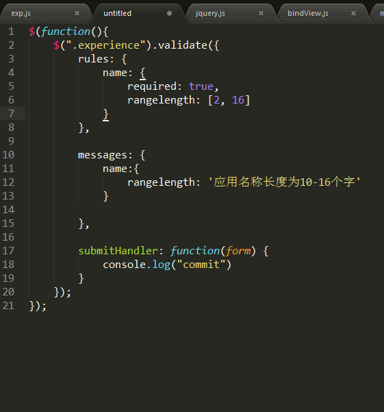

1. Package Control
功能：安装包管理
简介：sublime插件控制台，提供添加、删除、禁用、查找插件等功能
使用：https://sublime.wbond.net/installation
安装方法：
CTRL+` ，出现控制台
粘贴以下代码至控制台
ST2：
import urllib2,os; pf='Package Control.sublime-package'; ipp = sublime.installed_packages_path(); os.makedirs( ipp ) if not os.path.exists(ipp) else None; urllib2.install_opener( urllib2.build_opener( urllib2.ProxyHandler( ))); open( os.path.join( ipp, pf), 'wb' ).write( urllib2.urlopen( 'http://sublime.wbond.net/' +pf.replace( ' ','%20' )).read()); print( 'Please restart Sublime Text to finish installation')
ST3：
import
urllib.request,os;
pf
=
'Package
Control.sublime-package';
ipp
=
sublime.installed_packages_path();
urllib.request.install_opener(
urllib.request.build_opener(
urllib.request.ProxyHandler())
);
open(os.path.join(ipp,
pf),
'wb').write(urllib.request.urlopen(
'http://sublime.wbond.net/'
+
pf.replace('
','%20')).read())
其他方法：
如果以上方法不能安装，请使用下面的方法
选择菜单：Preferences > Browse Packages
打开sublime插件安装包文件夹
下载文件并复制到打开的文件夹
重启sublime
2. Emmet
功能：编码快捷键，前端必备
简介：Emmet作为zen coding的升级版，对于前端来说，可是必备插件，如果你对它还不太熟悉，可以在其官网（http://docs.emmet.io/）上看下具体的演示视频。
使用：教程-http://docs.emmet.io/cheat-sheet/、http://peters-playground.com/Emmet-Css-Snippets-for-Sublime-Text-2/

3. JSFormat
功能：JavaScript的代码格式化插件
简介：很多网站的js代码都进行了压缩，一行式的甚至混淆压缩，这让我们看起来很吃力。而这个插件能帮我们把原始代码进行格式的整理，包括换行和缩进等等，是代码一目了然，更快读懂~
使用：在已压缩的JS文件中，右键选择jsFormat或者使用默认快捷键（Ctrl+Alt+F）

4. LESS
功能：LESS高亮插件
简介：用LESS的同学都知道，sublime没有支持less的语法高亮，所以这个插件可以帮上我们
使用：打开.less文件或者设置为less格式
5. Less2CSS
功能：编译Less
简介：监测到文件改动时，编译保存为.css文件
使用：打开.less文件，编写代码保存即可看到同时生成.css的文件，如果没有则需要安装node。不推荐用这种方法编译，要么用koala，要么就用grunt编译。
6. Alignment
功能：”=”号对齐
简介：变量定义太多，长短不一，可一键对齐
使用：默认快捷键Ctrl+Alt+A和QQ截屏冲突，可设置其他快捷键如：Ctrl+Shift+Alt+A；先选择要对齐的文本
7. sublime-autoprefixer
功能：CSS添加私有前缀
简介：CSS还未标准化，所以要给各大浏览器一个前缀以解决兼容问题
使用：Ctrl+Shift+P，选择autoprefixer即可。需要安装Node.js。
其他设置如快捷键请参考：https://sublime.wbond.net/packages/Autoprefixer
8. Clipboard History
功能：粘贴板历史记录
简介：方便使用复制/剪切的内容
使用：
- Ctrl+alt+v：显示历史记录
- Ctrl+alt+d：清空历史记录
- Ctrl+shift+v：粘贴上一条记录（最旧）
- Ctrl+shift+alt+v：粘贴下一条记录（最新）
9. Bracket Highlighter
功能：代码匹配
简介：可匹配[], (), {}, “”, ”,
使用：点击对应代码即可
10. Git
功能：Git管理
简介：插件基本上实现了git的所有功能
使用：https://github.com/kemayo/sublime-text-git/wiki
11. jQuery
功能：jQ函数提示
简介：快捷输入jQ函数，是偷懒的好方法

12. DocBlockr
功能：生成优美注释
简介：标准的注释，包括函数名、参数、返回值等，并以多行显示，手动写比较麻烦
使用：输入/、/*然后回车，还有很多用法，请参照
https://sublime.wbond.net/packages/DocBlockr

13. ColorPicker
功能：调色板
简介：需要输入颜色时，可直接选取颜色
使用：快捷键Windows: ctrl+shift+c
14. ConvertToUTF8
功能：文件转码成utf-8
简介：通过本插件，您可以编辑并保存目前编码不被 Sublime Text 支持的文件，特别是中日韩用户使用的 GB2312，GBK，BIG5，EUC-KR，EUC-JP ，ANSI等。ConvertToUTF8 同时支持 Sublime Text 2 和 3。
使用：安装插件后自动转换为utf-8格式

15. AutoFileName
功能：快捷输入文件名
简介：自动完成文件名的输入，如图片选取
使用：输入”/”即可看到相对于本项目文件夹的其他文件

16. Nodejs
功能：node代码提示
教程：https://sublime.wbond.net/packages/Nodejs
ZCFcC
17. IMESupport
功能：sublime中文输入法
简介：还在纠结 Sublime Text 中文输入法不能跟随光标吗？试试「IMESupport 」这个插件吧！目前只支持 Windows，在搜索等界面不能很好的跟随光标。
使用：Ctrl + Shift + P →输入pci →输入IMESupport →回车

18. Trailing spaces
功能：检测并一键去除代码中多余的空格
简介：还在纠结代码中有多余的空格而显得代码不规范？或是有处女座情节？次插件帮你实现发现多余空格、一键删除空格、保存时自动删除多余空格，让你的代码规范清爽起来
使用：安装插件并重启，即可自动提示多余空格。一键删除多余空格：CTRL+SHITF+T（需配置），更多配置请点击标题。快捷键配置：在Preferences / Key Bindings – User加上代码（数组内）
{
"keys":
["ctrl+shift+t"],
"command":
"delete_trailing_spaces"
}
19. FileDiffs
功能：强大的比较代码不同工具
简介：比较当前文件与选中的代码、剪切板中代码、另一文件、未保存文件之间的差别。可配置为显示差别在外部比较工具，精确到行。
使用：右键标签页，出现FileDiffs Menu或者Diff with Tab…选择对应文件比较即可

20. GBK Encoding Support
功能：中文识别
简介：Sublime Text 2可识别UTF-8格式的中文，不识别GBK和ANSI，因此打开很多含中文的文档都会出现乱码。可以通过安装插件GBK Support,来识别GBK和ANSI。
使用：
- Open a GBK File
- Save file with GBK encoding
- Change file encoding from utf8 to GBK or GBK to utf8
21. 增强侧边栏
SideBarEnhancements插件有效地改进了Sublime Text的侧边栏。安装插件后在侧边栏上点击右键，可以找到一下新功能：在资源管理器中打开、新建文件、新建文件夹、以…打开、在浏览器中打开。
注：在浏览器中打开的热键是F12。